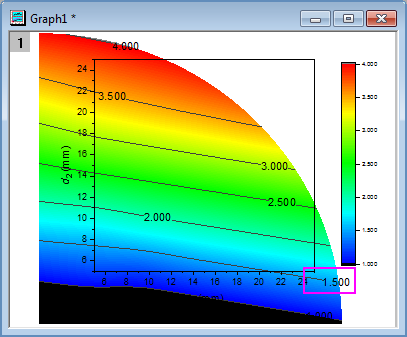

FAQ-925 Warum werden die Beschriftungen der Konturlinien nicht in meinem Konturdiagramm angezeigt?
Letztes Update: 10.03.2021
contour-label-disappear
Konturdiagramm mit benutzerdefinierten Grenzen
Wenn Sie die Beschriftungen der Konturlinien einschalten und dann eine benutzerdefinierte Grenze auf das Konturdiagramm anwenden, sind einige der Beschriftungen möglicherweise "verschwunden". Dies liegt daran, weil sie sich außerhalb der benutzerdefinierten Grenze befinden und daher abgeschnitten sind.
Um die Beschriftungen innerhalb Ihrer benutzerdefinierten Grenze neu zu zeichnen:
- Klicken Sie einmal auf das Konturdiagramm, um die Minisymbolleiste anzuzeigen und deaktivieren Sie die Schaltfläche Konturbeschriftungen zeigen
 und aktivieren Sie sie wieder. Alternativ klicken Sie auf die Schaltfläche Beschriftungen neu positionieren
und aktivieren Sie sie wieder. Alternativ klicken Sie auf die Schaltfläche Beschriftungen neu positionieren  (erfordert Origin 2021b oder höher).
(erfordert Origin 2021b oder höher).
Beachten Sie, dass Sie in den Origin-Versionen vor 2020 den Dialog Details Zeichnen öffnen und alle Beschriftungen auf Ihrem Diagramm neu zeichnen müssen.
Konturdiagramm ohne benutzerdefinierte Grenzen
Wenn Ihr Konturdiagramm keine benutzerdefinierte Grenze hat, Sie aber bemerken, dass einige Konturbeschriftungen nicht angezeigt werden (oder irgendwie verschwinden), dann haben Sie hier einige mögliche Abhilfen:
Origin-Version 2021 und älter
- Klicken Sie zum Öffnen des Dialogs Details Zeichnung doppelt auf das Konturdiagramm.
- Wählen Sie die Layerebene links und aktivieren Sie dann die Registerkarte Anzeige rechts. Deaktivieren Sie Daten nur innerhalb des Rahmens anpassen. Dies zeigt die Daten (einschließlich Beschriftungen) außerhalb des Rahmens an.
- 
- Klicken Sie auf die Beschriftung außerhalb des Rahmens, um sie auszuwählen, und ziehen Sie dann an ihr, um sie innerhalb des Layerrahmens neu zu positionieren.
- Nachdem alle Beschriftungen zurück in den Layerrahmen gezogen wurden, öffnen Sie erneut den Dialog Details Zeichnung und aktivieren Sie Daten nur innerhalb des Rahmens anpassen.
Origin-Version 2021b und höher
Zusätzlich zum Bearbeiten der Einstellungen Nur innerhalb des Rahmens können Sie einen der folgenden Schritte versuchen:
- Klicken Sie einmal auf das Konturdiagramm, um das Konturdiagramm anzuzeigen, und dann auf die Schaltfläche Beschriftungen neu positionieren .
- Versuchen Sie, etwas durch das Ändern des Werts der Systemvariable @CLE zu erreichen. Der Standardwert = 5, wodurch Beschriftungen außerhalb von 5 % des Layers (5 % der Layerbreite/-höhe) ausgeschlossen werden sollten. Sie können versuchen, den Wert von @CLI temporär zu ändern. Wenn Sie den Wert von einer dieser LabTalk-Systemvariablen ändern, klicken Sie einmal auf das Diagramm und schalten Sie die Beschriftungen aus und wieder ein, indem Sie zweimal auf die Schaltfläche Konturbeschriftungen zeigen auf der Minisymbolleiste klicken. Oder klicken Sie auf die Schaltfläche Beschriftungen neu positionieren .
Schlüsselwörter:Kontur, Beschriftung, nicht gezeigt, verschwinden, Grenzen
Origin-Version mind. erforderlich: 2019